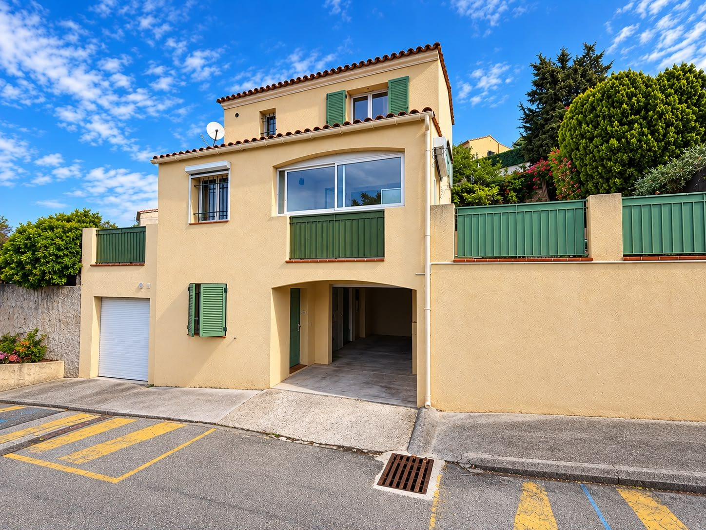
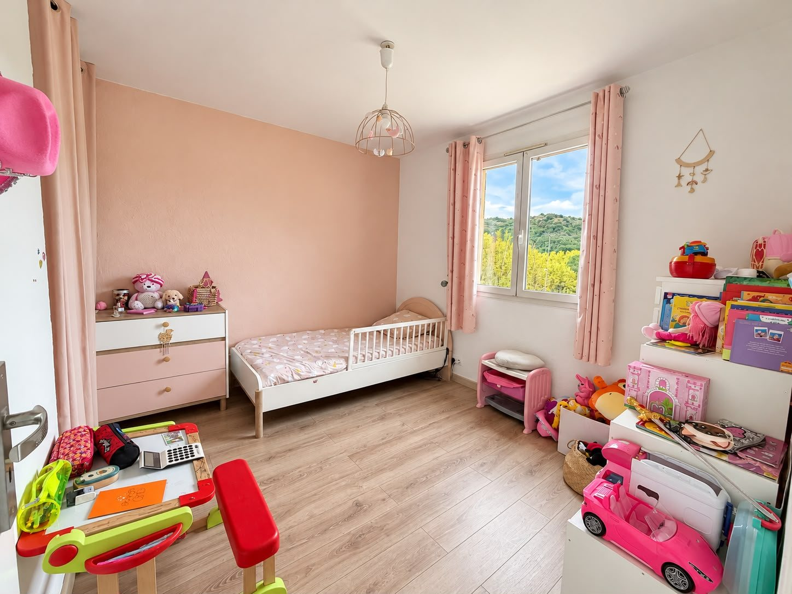
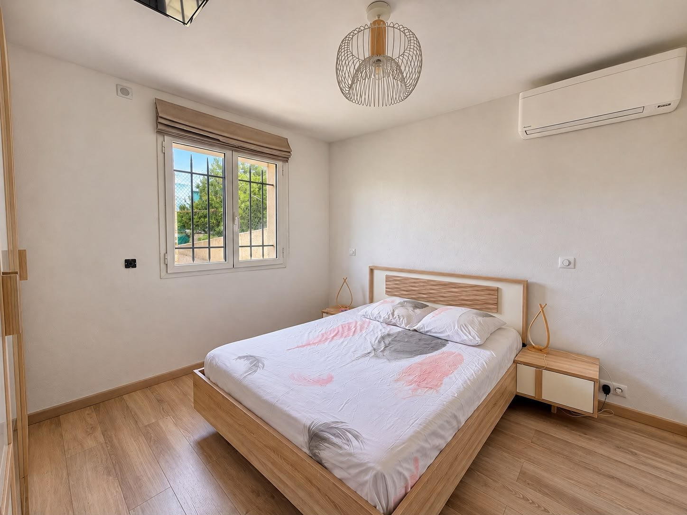
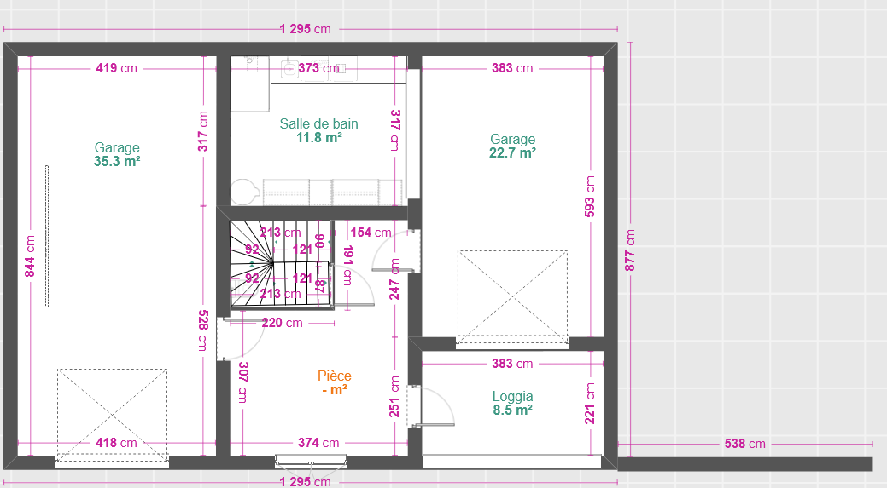

Un lieu de vie.
Trois niveaux
à découvrir.
Explorez les volumes, les espaces de vie et les extérieurs de cette maison à travers ses photographies, ses plans et une maquette interactive.
Une maison aux espaces multiples.
Des pièces lumineuses, une piscine, plusieurs espaces extérieurs et des niveaux distincts : découvrez l'organisation de cette maison grâce à ses plans et à ses images.
Surfaces reprises des documents fournis, à titre indicatif. Elles ne constituent pas un mesurage officiel.

La pièce de vie ↗
La piscine ↗De la lumière, de la vie, de l'espace.
Une circulation entre les pièces de vie et les espaces de plein air.
Visitez la maison autrement.
Découvrez une maison reconstruite et meublée en 3D d’après les plans cotés et les photos : façades, fenêtres, toiture, volumes et piscine. Sélectionnez une pièce pour comparer la maquette à sa photographie réelle.
Maquette 3D indicative, reconstruite à partir des plans et photos : trémies, portes, baies et fenêtres repérées mais non métrées sur site. Ne remplace pas un relevé d’architecte.
Les pièces qui font la maison.
Les surfaces sont celles inscrites sur les plans. Sélectionnez un espace pour revenir à la maquette 3D.
Une maison, niveau par niveau.
Consultez les plans d'origine, avec leurs dimensions, puis retrouvez chaque étage dans le module 3D.

Chaque détail en images.
Une sélection des photographies fournies : façade, pièces de vie, chambres, annexes et extérieurs.